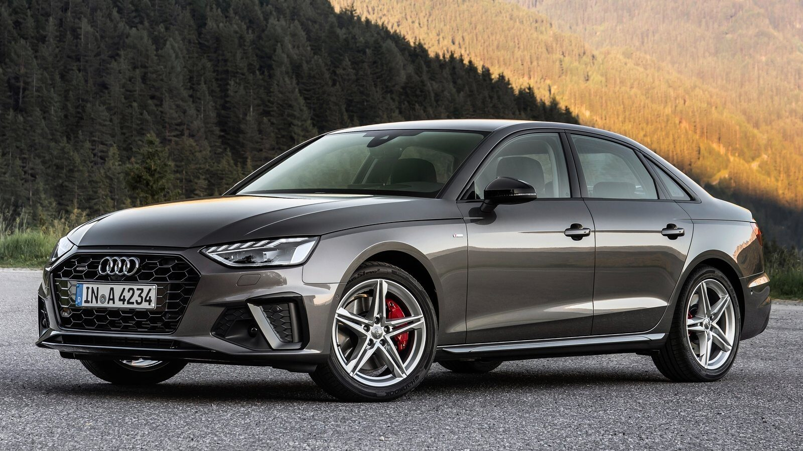

El Audi A4 es un sedán compacto de lujo que ha sido un pilar en la línea de modelos de Audi desde su introducción en 1994. Conocido por su combinación de elegancia, tecnología y rendimiento, el A4 ha sido un competidor destacado en su segmento.

Características Principales
Estilo aerodinámico y elegante.
Motorización eficiente y potente.
Interior lujoso con tecnología avanzada.
Opciones de tracción delantera o tracción integral quattro.
Sistema MMI (Multi Media Interface) para control de funciones del vehículo.
Faros LED con tecnología Matrix LED disponible en algunas versiones.
Versiones Disponibles
El Audi A4 está disponible en varias versiones que incluyen diferentes niveles de equipamiento y opciones de motorización para adaptarse a las preferencias individuales de los compradores. Las versiones pueden incluir el motor TFSI de cuatro cilindros, el motor TDI de cuatro cilindros o el motor TDI V6, dependiendo del mercado.
Seguridad y Asistencia al Conductor
El Audi A4 está equipado con tecnologías avanzadas de seguridad y asistencia al conductor, como Audi Pre Sense, que ayuda a prevenir colisiones y proteger a los ocupantes mediante la activación de medidas preventivas en caso de una situación de emergencia.
Sistema de asistencia de tráfico cruzado trasero.
Control de crucero adaptativo con función de parada y arranque.